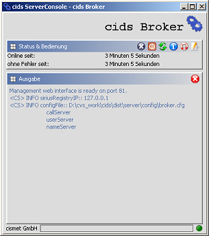
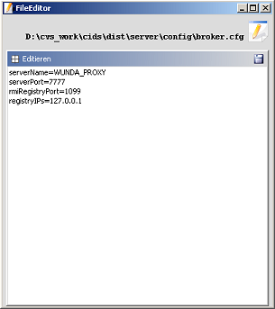

Mit der ServerConsole kann ein cids Server gestartet und administriert werden.
Inhalt
Die ServerConsole und ihre Bedienelemente im Überblick
Der FileEditor und seine Bedienelemente im Überblick
Das Server Management Webinterface
Die ServerConsole und ihre Bedienelemente im Überblick
Im "Status & Bedienung" Bereich wird angezeigt, wie lange der cids Server schon läuft und wie lange es keine Fehler gab. Desweiteren kann mit den Icons im rechten Teil der Titelleiste die ServerConsole minimiert, der cids Server gestoppt und neu gestartet, dessen Serverstatus abgerufen und ein Editor zum Editieren der Konfigurationsdatei aufgerufen werden.
Im "Ausgabe" Bereich werden die Logging-Ausgaben von cids Server und ServerConsole angezeigt. Mit dem Icon in der Titelleiste kann der Inhalt des Anzeigebereichs gelöscht werden.
Das LED-Symbol unten rechts zeigt den Zustand des cids Servers an.
grün: Server läuft.
gelb: Server ist am Hochfahren.
rot: Server ist gestoppt.

| Minimiert die ServerConsole in die System Tray. | |
| Beendet den cids Server. | |
| Startet den cids Server neu. | |
| Zeigt den Serverstatus an. | |
| Ruft diese Hilfedatei auf. | |
| Startet den FileEditor zum Editieren der cids Server Konfigurationsdatei. | |
| Löscht das Protokollausgabe-Fenster. |
Der FileEditor und seine Bedienelemente im Überblick
Der FileEditor wird automatisch mit der Konfigurationsdatei des jeweiligen cids Servers gestartet.

| Speichert die editierte Konfigurationsdatei. |
Das Server Management Webinterface
Wenn der Kommandozeilenparameter port (-p) angegeben wurde, wird das Webinterface auf diesem Port gestartet. Es kann mit folgender Adresse in einem Browser aufgerufen werden: http://adresse_des_serverrechners:port_des_cidsservers